ticker
NVDA 48.6
AAPL 28.5
DIS 27.8
XOM 27.8
JPM 27.4
MSFT 27.1
WMT 21.1
PG 18.5
JNJ 18.1
KO 17.8
SPY 17.6Machine Learning in Finance · Session 4
Eleven stocks, ten years, ranked by how much they move:
ticker
NVDA 48.6
AAPL 28.5
DIS 27.8
XOM 27.8
JPM 27.4
MSFT 27.1
WMT 21.1
PG 18.5
JNJ 18.1
KO 17.8
SPY 17.6Annualised volatility, in percent. Three lines of pandas.
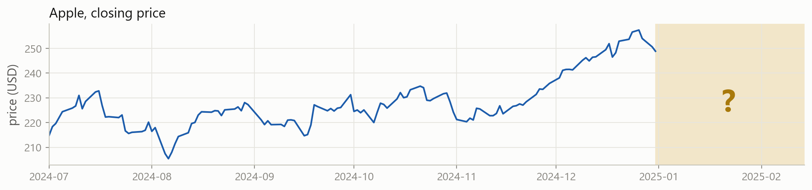
Will tomorrow be an up day? Nothing you have written so far even attempts this. Every tool from Sessions 1 to 3 describes data that already happened.
What did happen?
You can check every one of these against the data.
What will happen?
You cannot check any of them yet. That is the whole problem.
A prediction needs four things: a table of the right shape, a rule, a way to score the rule, and data the rule has never seen. Today is those four things.
By the end of the session you can:
Sessions 1 to 3 were about writing code. This one is mostly about ideas, and ideas here are written in symbols.
Nothing today is new maths. It is the vectors, matrices and sums you already use in econometrics, written the way machine learning writes them, plus the occasional expectation.
We still write code, and there are live cells throughout. But we do not fit a model today. That starts in the next block, once the ideas are in place.
Part 1
Observations, features, targets, and the error nobody can remove.
Each row is one observation. Each feature column is something you know at that moment. The target column is what you want to predict.
You already know most of these words. Machine learning just uses different ones.
| econometrics | machine learning | in this table |
|---|---|---|
| observation | sample, instance, example | one row, one date |
| independent variable, regressor | feature, predictor, input | ret_1d, vol_20d |
| dependent variable | target, label, response, output | ret_next |
| coefficient | weight, parameter | one number per feature |
| residual | error | what the rule got wrong |
| model | learner, estimator | the rule itself |
shift(-1) pulls tomorrow’s return back onto today’s row. Every feature on a row is known before the target happens. That is the rule that makes the table honest.
The table has a standard notation, and it is the notation from Session 3.
\mathbf{X} \in \mathbb{R}^{\,n \times p}, \qquad \mathbf{y} \in \mathbb{R}^{\,n}
aapl.shape on the previous slide told you n and p+1 directly. In NumPy \mathbf{X} is a 2-dimensional array and \mathbf{y} is a 1-dimensional one.
Y = \underbrace{f(X)}_{\text{signal}} \; + \; \underbrace{\varepsilon}_{\text{noise}}
There is some true relationship f between the features and the target, and whatever it does not account for is \varepsilon.
f is fixed and unknown. \varepsilon has mean zero and is independent of X. Everything in the rest of this course is an attempt to get at f.
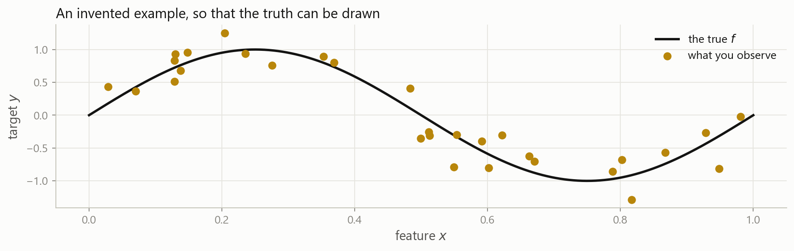
Invented data. With real data nobody can draw the black line, which is exactly why this picture is worth looking at now.
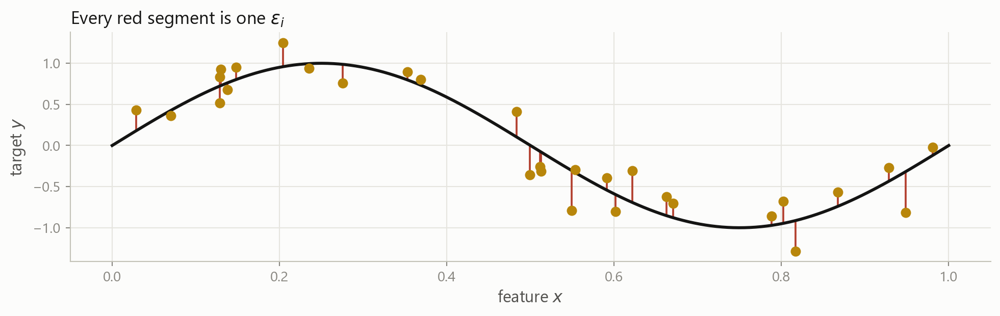
\varepsilon is measurement error, features you did not collect, and genuine randomness, all at once. In finance it is most of what you see.
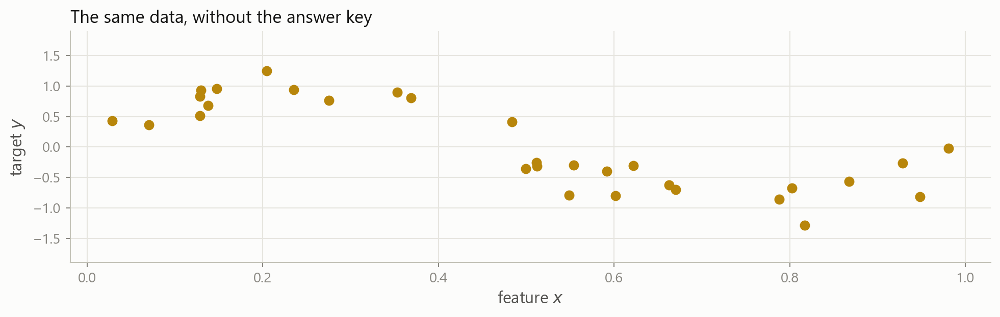
Thirty dots. No curve, no formula, and no way to check your answer against the truth. This is the situation you are always in.
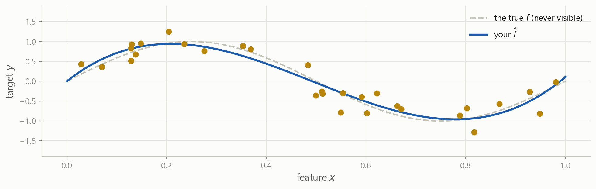
\hat{f} is your estimate, built from the data you have. A model is a recipe for producing \hat{f}, and a prediction is \hat{y} = \hat{f}(x).
You want the prediction to be close to the truth, and you do not care how.
The rule is allowed to be a black box.
You want to know which features matter, and how.
The rule has to be readable.
Econometrics leans hard on the right-hand column. Machine learning leans hard on the left. Same framework, different priority.
\mathbb{E}\left[(Y - \hat{Y})^2\right] \;=\; \underbrace{\left[f(X) - \hat{f}(X)\right]^2}_{\textbf{reducible}} \;+\; \underbrace{\operatorname{Var}(\varepsilon)}_{\textbf{irreducible}}
The gap between your estimate and the truth. Better features, more data or a better model shrink it.
The noise itself. No model, no data and no amount of compute removes it. It is a property of the problem.
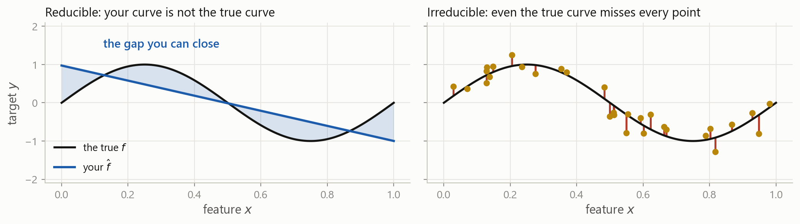
You can move the blue curve until it lies on top of the black one. The red segments would still be there, because they are the \varepsilon from earlier: the part of y that no feature in your table accounts for.
Explaining today with today is easy. Explaining tomorrow with today is close to impossible, because \operatorname{Var}(\varepsilon) is enormous.
That last number is not a typo. We come back to it in Part 4.
Session 3 ended on this line:
\hat{f}(x) = \hat{\beta}_0 + \hat{\beta}_1 x, \qquad \hat{\boldsymbol\beta} = (\mathbf{X}^{\top}\mathbf{X})^{-1}\mathbf{X}^{\top}\mathbf{y}
Linear regression is a machine learning model: a rule with parameters, chosen to fit a sample. It is the simplest one, and it is still the one to beat.
Pick a form first, then find its numbers.
Linear regression fixes one coefficient per feature, plus an intercept, whatever the sample size.
Cheap, stable, easy to read. Wrong if the true shape is not that shape.
Let the data choose the shape.
Nearest neighbours, trees, splines. The rule grows with the sample.
Flexible. Needs far more data, and is harder to explain.
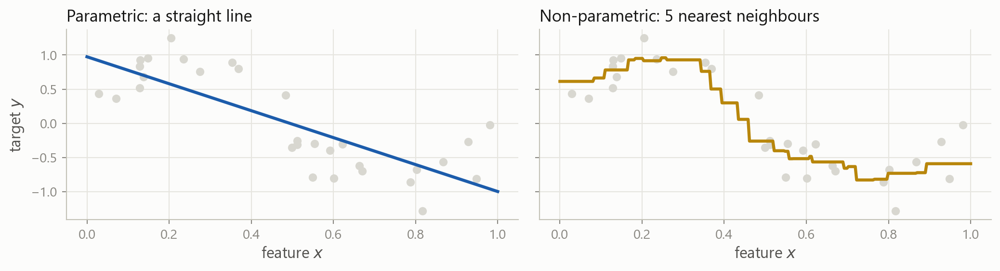
Two shapes for the two coefficients you get on the left. On the right there are no coefficients at all: the rule is “average the five closest rows”.
A model has already seen the answers in the rows it was built from, and a flexible enough rule can simply memorise them. So a score computed on those rows is not evidence of anything.
Why you split is today’s business, and it runs through the rest of the session. How to split well, and how to reuse the training rows without ever touching the test rows, is model selection and cross-validation in the next block.
rets["MSFT"] is a Series of daily returns. Build a two-column table whose target is the return five days ahead.
A negative shift moves the future backwards onto today’s row. Shifting the wrong way gives you yesterday’s return as a target, which you could predict perfectly and which would be worth nothing.
Part 2
Supervised, unsupervised, and the one we are not covering.
For every row in the training data, somebody has already written down the target.
Credit past loans, and whether each one defaulted
Trading past days, and what the return turned out to be
Fraud past transactions, and which were later confirmed as fraud
Ratings past issuers, and the rating each was given
The target column is the expensive part. Somebody had to observe it, or label it by hand, and there is usually far less of it than you would like.
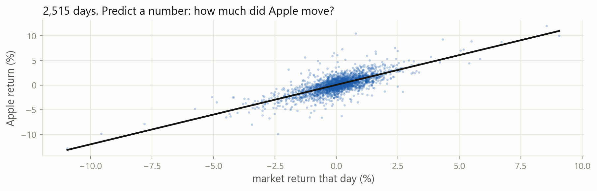
The answer can be any value on the vertical axis. This is the OLS picture you already know, seen as a prediction problem.
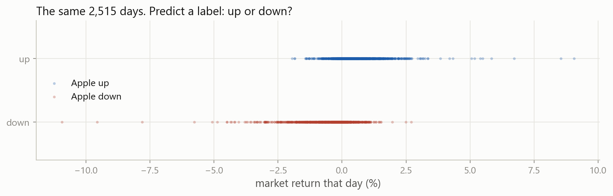
Now there are only two possible answers, and being “nearly right” is not a thing.
Nothing changed in the data. You chose what the target would be, and that choice changes the model you can use, the metric you score it with, and what a mistake costs you.
As regression predict the return, then act on its size
As classification predict the direction, then act on the direction
Turning a number into a label always throws information away. A +0.02% day and a +6% day become the same “up”. Sometimes that is the right trade, because direction is easier to get right than size.
A comparison gives True and False, and .astype(int) turns them into 1 and 0. 53% of days are up, which will matter a great deal when we start scoring classifiers.
There is no target column. You have \mathbf{X} and nothing else, and the question becomes “what is the structure in here?”
Clustering which of these stocks behave alike, without being told the sectors
Dimension reduction 500 correlated series, and three factors that carry most of it
Anomaly detection which trades do not look like any of the others
Topic models what are these ten thousand filings about
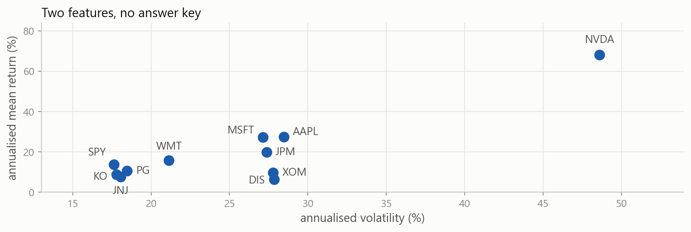
Nobody labelled these. You can still see that the defensive names sit together in the bottom left, and Nvidia sits alone. That is clustering, done by eye.
There is a right answer, so there is a score.
You can say “this model is better than that one” and defend it with a number.
There is no right answer, so there is no score.
Three clusters or five? Both are defensible. You are back to judgement.
This is why supervised learning dominates in practice, and why most of this course is about it.
The third paradigm. No fixed table at all: an agent takes actions in an environment, gets rewards, and learns a policy that earns more of them.
In principle optimal execution, hedging, market making, portfolio rebalancing
In practice it needs an environment to practise in, and markets do not offer one
We do not cover reinforcement learning in this course. You should know the word, and know that it is a different setting: the data depends on what the agent decided to do.
Which is each of these?
Number 3 could be made a regression by predicting the probability instead. The line is not always sharp, and the decision is yours to defend.
Part 3
Missing values, extreme values, and columns measured in different worlds.
Calendars disagree US and European exchanges keep different holidays, so a merged table has gaps
The company was not there an IPO in 2019 has no 2015 rows, and a delisted firm has no 2024 rows
Trading stopped halts, suspensions, and days with no quote
Reporting is optional a fund reports until the month it would rather not
The last one is the dangerous one, and we come back to it.
reindex forces the table onto a row per calendar day, which is what happens the moment you merge with anything daily. 1,136 of 3,652 days are now empty, and .isna().sum() counts them column by column.
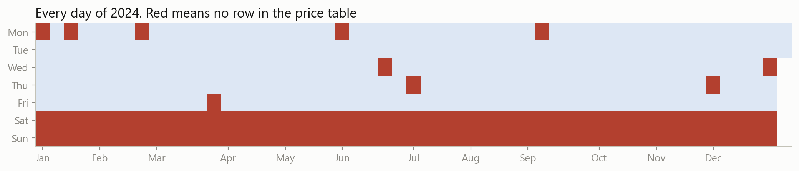
Two solid rows of weekends, and ten single red squares: New Year, Martin Luther King Day, Presidents’ Day, Good Friday, and the rest of the market holidays. A picture of missingness usually tells you the cause immediately, which is what you need before you decide what to do about it.
Drop the rows df.dropna(). Safe when the gaps are few and unrelated to what you are studying.
Drop the column if a feature is 60% empty it is usually not worth rescuing.
Fill them in fillna, ffill, interpolate. You are inventing data, so be deliberate about it.
Keep the fact add a column that records “this was missing”. Sometimes that is the signal.
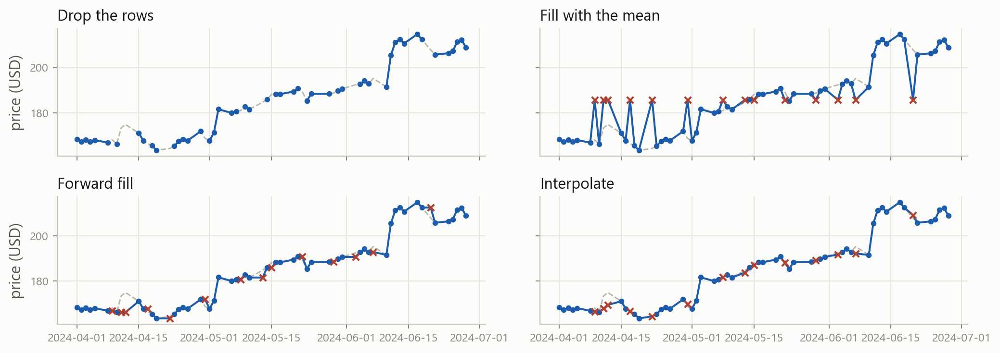
Grey dashed is the truth, red crosses are the invented values. Fourteen days removed from Apple’s spring.
Interpolation wins, because it draws a line between the price before the gap and the price after it.
On 3 May you would not have known 8 May’s price. Interpolation quietly puts tomorrow’s information into today’s row, and every result built on it is optimistic. Forward fill only ever looks backwards.
Thanksgiving. A vendor outage. A field nobody filled in.
Dropping those rows costs you sample size and nothing else.
The fund stopped reporting after the month it lost 40%. The firm delisted because it failed.
Drop those rows and your sample is only the survivors.
The second case has a name in finance: survivorship bias. It is the reason a backtest on today’s index members looks so good.
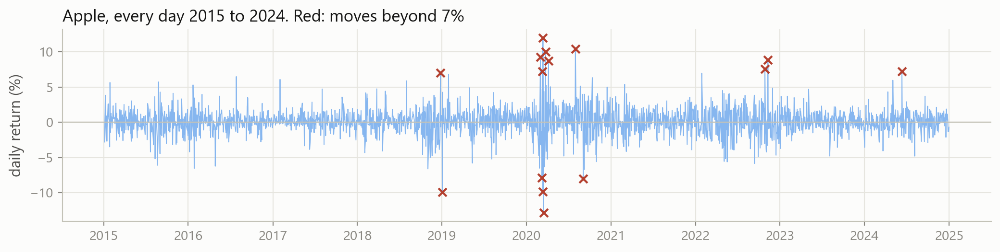
Most of them are in March 2020, and they are not mistakes. The worst day was -12.9%, the best was +12.0%, and they were eleven days apart.
A price of 0, or of 1,000,000. A return of +4,000% because of an unadjusted stock split. A date in 1901.
Fix it or drop it, and write down what you did.
March 2020. The 2008 quarter. The day the takeover was announced.
Delete these and you have built a model of a market where nothing ever happens.
In most fields the extremes are noise. In finance they are usually the phenomenon. Risk lives in the tail, so removing the tail removes the subject.
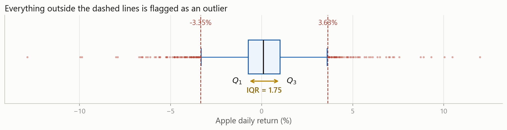
Q_1 and Q_3 are the 25th and 75th percentiles, and the interquartile range \text{IQR} = Q_3 - Q_1 is the width of the middle half of the data.
\text{IQR rule: outside } [\,Q_1 - 1.5\,\text{IQR},\; Q_3 + 1.5\,\text{IQR}\,] \qquad \text{z-score rule: } \left|\frac{x - \bar{x}}{s}\right| > 3
The rules assume a bell curve. Returns are not one, so the rules mark hundreds of perfectly real days as errors.
There is also a circular problem: one enormous day inflates s, which then makes that day look less extreme.
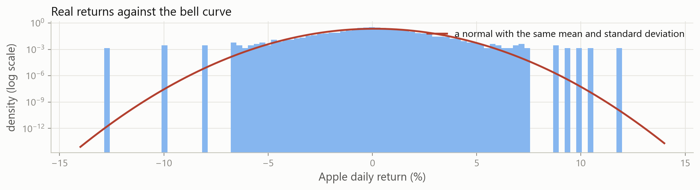
The bars sit far above the red line at both ends. Days that “cannot happen” happen several times a decade, and they are the ones that decide whether a strategy survives.
Check the source first most true errors are visible in one plot or one .describe()
Do not delete by default a rule that flags 5% of your days is not finding errors, it is finding the market
Score with a robust metric MAE cares far less about one bad day than MSE does. Part 4.
Or transform a log squeezes the long right tail of prices, volumes and market caps
Whatever you choose, write it down. “We dropped returns beyond ±20%, three observations” is a sentence that belongs in the report.
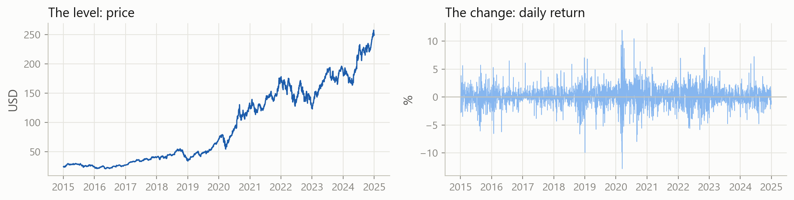
The left panel wanders off and never comes back, so its mean means nothing. The right panel hovers around a fixed level, so its mean and standard deviation describe something real. Model the changes, not the levels.
r_t^{\log} = \log\!\left(\frac{P_t}{P_{t-1}}\right) = \log P_t - \log P_{t-1}
They add up a year’s log return is the sum of its days. Simple returns have to be compounded.
They are symmetric -50% then +100% gets you back to where you started, and in logs those cancel exactly
They tame right skew market cap, volume and price are all long-tailed, and a log makes them workable
They are nearly the same for small daily moves, log(1 + r) and r agree to three decimals
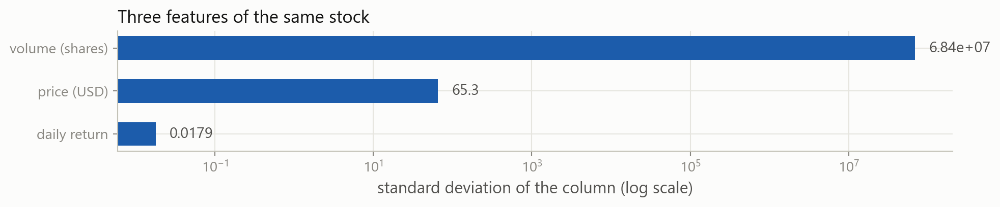
The volume column varies about four billion times more than the return column. Any method that measures distance, or penalises large coefficients, will hear only the volume.
z_i = \frac{x_i - \bar{x}}{s}
Every column now has mean 0 and standard deviation 1, so a coefficient of 0.4 means the same thing in every column. OLS does not need this. Nearest neighbours, penalised regression and neural networks all do.
One column of text becomes one 0/1 column per category. This is one-hot encoding, and it is how a sector, a rating or a country gets into \mathbf{X}.
Every number you use to clean the data, the mean you filled with, the standard deviation you divided by, the quantiles you flagged outliers with, must be computed on the training rows alone.
Those are the rows from Part 1 that the model is allowed to learn from. Compute the mean over the whole sample instead and it already contains the period you were going to test on, so your test score flatters you and the model disappoints in production.
It is the same look-ahead problem as interpolating across a gap, and it is the single most common mistake in student projects and in published finance papers alike.
Apply the IQR rule to Microsoft’s returns, and count how many days it flags.
134 days of 2,515, or 5.3%. Almost exactly what the rule flagged for Apple, and far too many to be errors. The fences sit at -3.2% and +3.5%, so the rule is calling an ordinary bad Tuesday an outlier.
Part 4
Turning a column of mistakes into one number you can defend.
Session 3 fitted Apple’s return against the market’s and got two numbers. That is a model:
\hat{y}_t = 0.00043 + 1.2073 \, x_t
e_i = y_i - \hat{y}_i
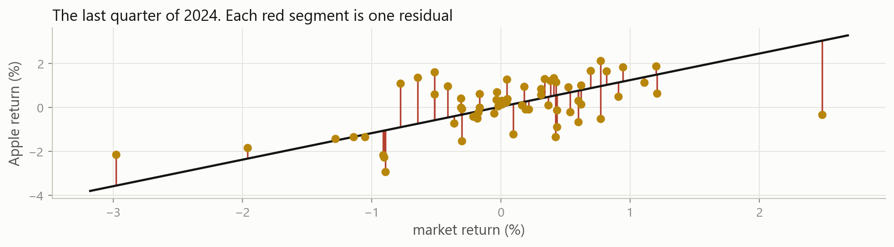
The average residual is four millionths. The average residual size is more than two thousand times bigger. Least squares picked the line that makes the positives and the negatives cancel, so the sum tells you nothing at all about how wrong the model was.
You need to remove the signs first. There are two standard ways to do that.
\text{MAE} = \frac{1}{n}\sum_{i=1}^{n}\left|\,y_i - \hat{y}_i\,\right|
The average size of a mistake, in the units of the target.
For this model, 0.83%. On a typical day the rule is wrong by about eight tenths of a percentage point, and that sentence is understandable by anybody.
\text{MSE} = \frac{1}{n}\sum_{i=1}^{n}\left(y_i - \hat{y}_i\right)^2 \qquad \text{RMSE} = \sqrt{\text{MSE}}
Squaring removes the sign too, but it also punishes a big miss much harder than several small ones.
MSE is in squared units, which nobody can interpret: 0.000142 squared returns. Taking the root puts it back into percent, which is why RMSE is the one you report.
RMSE is always at least as large as MAE. The gap between them tells you how uneven the errors are.
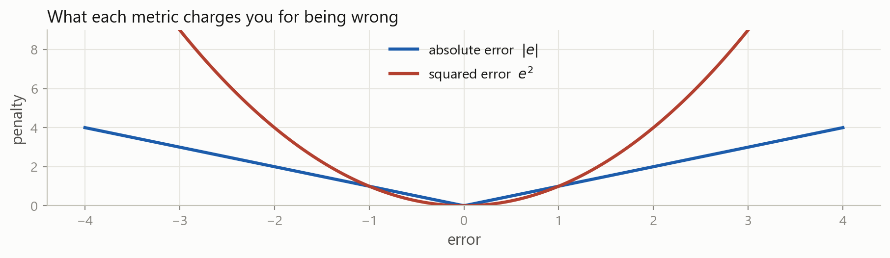
Being wrong by 4 costs four times as much as being wrong by 1 under MAE, and sixteen times as much under MSE.
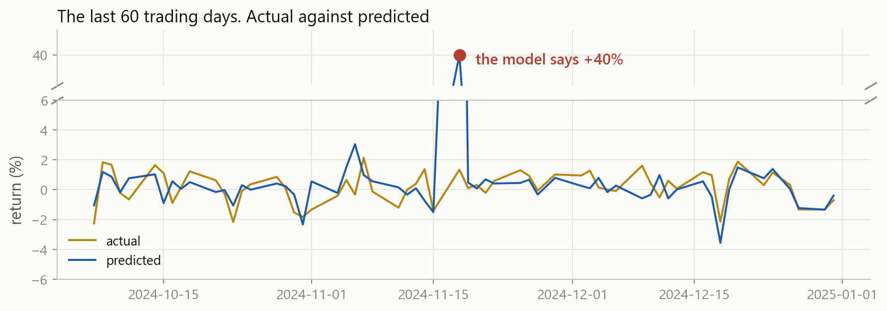
One day in sixty. MAE says the model got a little worse. MSE says it fell apart.
Neither is lying. They answer different questions: “how wrong is this model on a normal day” and “how badly can this model hurt me”.
\text{MAPE} = \frac{100}{n}\sum_{i=1}^{n}\left|\frac{y_i - \hat{y}_i}{y_i}\right|
Percentage error is attractive because it has no units, and it is common in sales and demand forecasting.
Never use it on returns. A day where the true return is 0.0001 makes the denominator almost zero, so one ordinary day can contribute thousands of percent to the average.
R^2 = 1 - \frac{\sum_i (y_i - \hat{y}_i)^2}{\sum_i (y_i - \bar{y})^2} = 1 - \frac{\text{RSS}}{\text{TSS}}
MAE and RMSE tell you how wrong you were. R² tells you how wrong you were compared with the laziest possible model: always predict the average.
R^2 = 0 means you matched that lazy model. R^2 = 1 means you fit every point exactly.
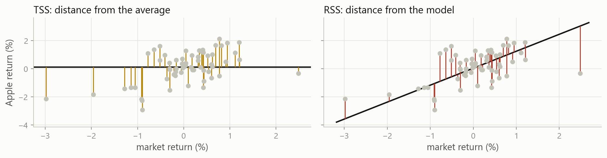
R² is one minus the ratio of the red lengths to the amber ones, squared and added up.
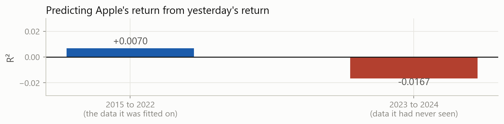
Out of sample there is nothing forcing R² to be positive. Negative means you would have done better by always predicting the average.
An R² of 0.01 on next-day returns would be a serious result. It means 99% of what happens is noise to you, and the remaining 1%, applied every day across hundreds of names, is a business.
This is why finance is unlike most machine learning applications. A vision model with 1% explained variance is broken. A return model with 1% is a fund. Judge the number against the problem, never against 1.
Everything since the start of this part assumed the target was a number, so “how far off were you” had an answer. Change the target to a label and that question stops making sense: what is “up” minus “down”?
predict Apple’s return from the market’s return
score it by the size of the residuals: MAE, RMSE, R²
predict whether Apple rose, from whether the market rose
there is no residual, so score it by counting right and wrong
Same eleven stocks, same 2,515 days, same market feature. Only the target column changed, exactly as in Part 2.
You said up, and it went up a true positive
You said up, and it went down a false positive, a false alarm
You said down, and it went up a false negative, a miss
You said down, and it went down a true negative
Every classification metric in use is built out of those four counts, and nothing else.
Predicting “Apple rose today” from “the market rose today”, over 2,515 days.
Four boolean masks and four sums. Nothing here that Session 3 did not already give you.
\text{accuracy} = \frac{TP + TN}{TP + TN + FP + FN}
75.0% of days called correctly. It is the first number everybody computes, and on its own it is close to useless.
Now predict something rare: a day when Apple falls more than 5%.
A model with no skill whatsoever beats almost anything you will build, measured by accuracy. When one class is rare, accuracy measures the class balance, not the model.
\text{precision} = \frac{TP}{TP + FP} \qquad \text{recall} = \frac{TP}{TP + FN}
Of the days I called up, how many really were?
Low precision means false alarms: you traded on a signal that was not there.
Of the days that really were up, how many did I catch?
Low recall means misses: the move happened and you were not in it.
Neither uses the true negatives, which is exactly why they survive an imbalanced problem when accuracy does not.
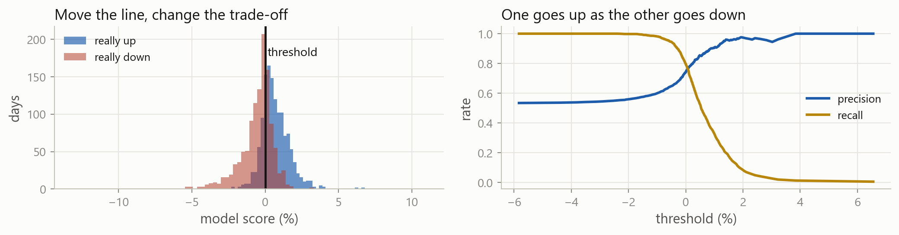
Demand a score above +1% before calling a day up, and precision climbs to 91% while recall collapses to 30%.
F_1 = 2 \cdot \frac{\text{precision} \cdot \text{recall}}{\text{precision} + \text{recall}}
The harmonic mean, which is close to the smaller of the two. Our model scores 0.768.
A plain average would let 100% precision and 1% recall look respectable. The harmonic mean does not: it lands at 2%.
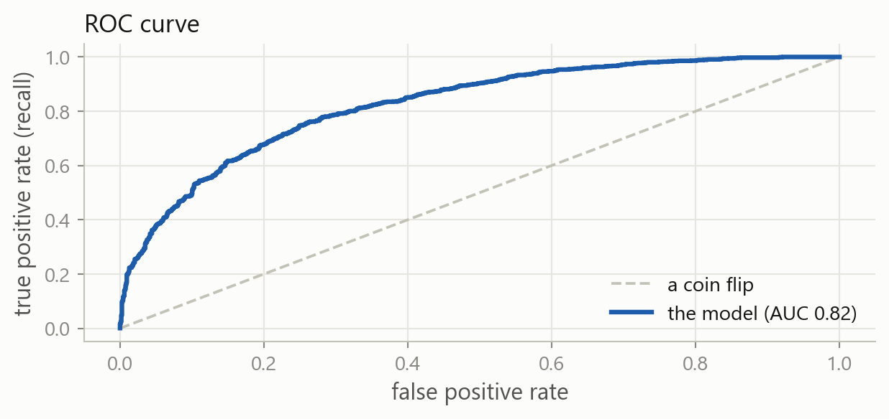
Every threshold is one point on that curve. AUC is the area under it: 0.5 is a coin flip, 1.0 is perfect.
| the question | the metric | why |
|---|---|---|
| how far off is a typical forecast | MAE | in the units of the target, robust |
| how badly can it hurt me | RMSE | large errors dominate, which is the point |
| is it better than predicting the mean | R² | scale free, comparable across targets |
| the target is a label, classes balanced | accuracy | simple and honest here |
| the target is rare | precision and recall | accuracy is meaningless |
| I need to compare across thresholds | ROC AUC | threshold free |
The metric is a business decision, not a technical one. What does a false alarm cost, and what does a miss cost?
A “crash warning” model says the day will be bad whenever the market itself is down more than 1%. Compute its recall on Apple’s 5% down days.
It catches 19 of the 22 crashes, a recall of 0.864. Before you celebrate, ask the other question: it warns on 278 days in total, so its precision is 0.068. Thirteen false alarms for every real one.
Part 5
Why the model that fits best is usually the one to throw away.
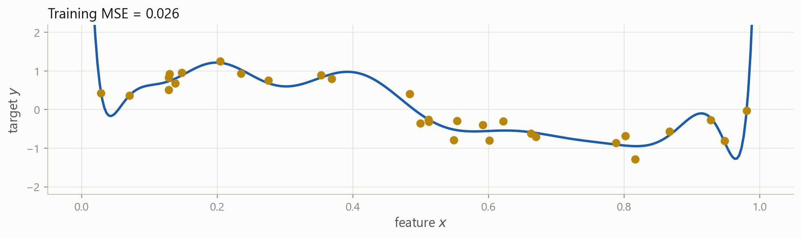
The same invented data from Part 1, and a curve that passes through almost every point. By every metric in Part 4, this is an excellent model.
Before the next slide, decide what you think.
There is no trick. The answer is the whole of the rest of this session.
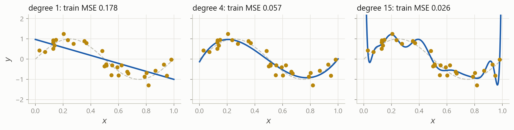
Grey dashed is the truth. Training error falls every time you add flexibility, and it will keep falling all the way to zero.
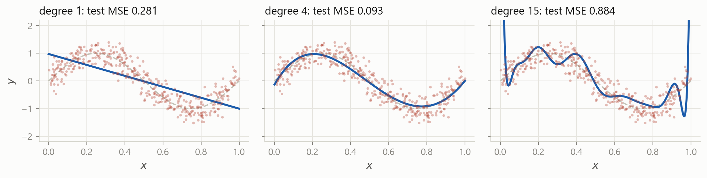
Four hundred new points. The middle model is now the best by a distance, and the flexible one is thirty times worse than it was on its own training data.
The model is too rigid to represent the relationship.
Bad on the training data, bad on new data, and bad in the same way on both.
The straight line above.
The model has learned the noise as if it were signal.
Excellent on the training data, poor on new data. The gap is the symptom.
The degree-15 curve above.
You cannot tell them apart from the training score. That is the entire reason for everything on the next few slides.
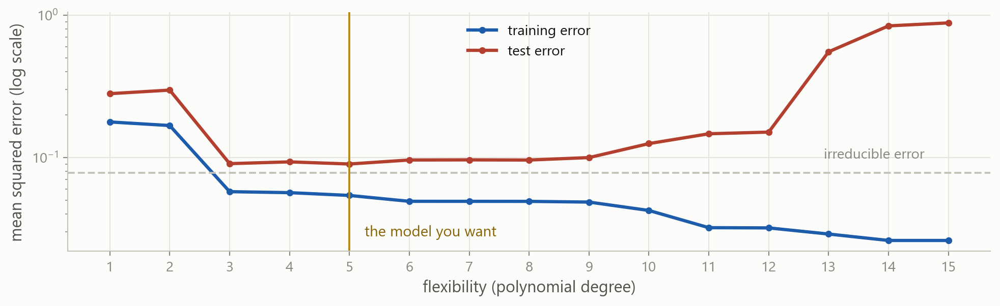
Training error falls forever. Test error falls, bottoms out, and then climbs. Every model selection procedure in this course is a way of finding that bottom without cheating.
x_train and y_train are the thirty invented points from a few slides back.
Training error kept improving all the way to degree 15. Test error stopped improving at 5. Only one of those two numbers was available while the curve was being chosen.
The rows you set aside in Part 1 are what turn “my model fits well” into evidence. Everything after today, cross-validation included, is a way of estimating that test error better without spending the test set.
aapl is the feature table from Part 1. Splitting it is one line, because a DataFrame index knows about dates.
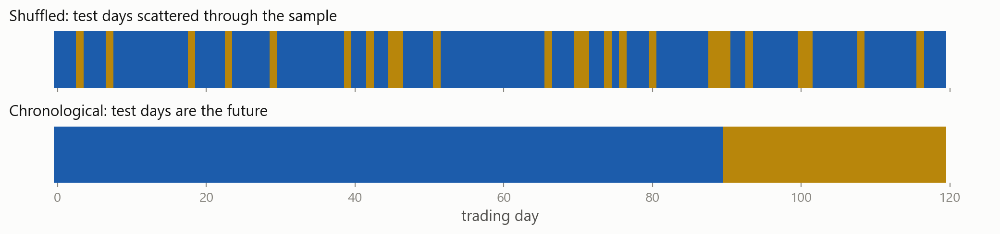
In the top panel the model trains on Wednesday and Friday to predict Thursday. It knows the future. Any backtest built that way will look wonderful and lose money.
Shuffling a time series the split has to be a date, not a random draw
Scaling on the full sample the mean you subtracted contains the test period
Interpolating across a gap Part 3: the fill used the price after the gap
Choosing features after peeking you tried forty ideas and kept the one the test set liked
Restated fundamentals the numbers in the database today are not the ones published then
Today’s index members the failures dropped out, so the sample is only the survivors
Test error is not one thing. Split it into two, and everything about model choice becomes clearer.
Error from the model being too simple to represent the truth.
It would still be there if you had a million rows.
Error from the model being too sensitive to the particular sample you drew.
Collect a different sample, get a different model.
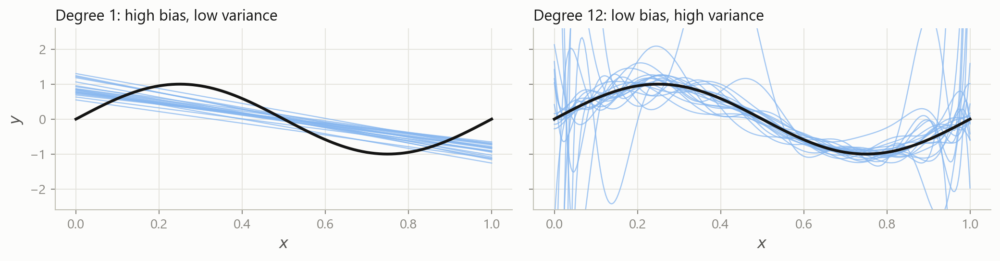
Left: every line is wrong in the same way, and they all miss the curve. Right: the lines are right on average and wildly different from each other.
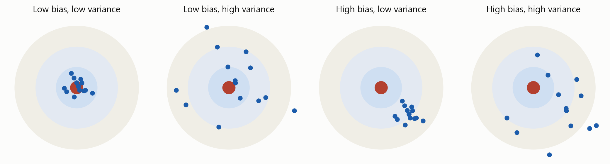
Each dot is the model you would have got from one sample. Bias is how far the cluster sits from the centre. Variance is how spread out it is.
\mathbb{E}\left[\left(y_0 - \hat{f}(x_0)\right)^2\right] = \underbrace{\operatorname{Var}\!\left(\hat{f}(x_0)\right)}_{\text{variance}} + \underbrace{\left[\operatorname{Bias}\!\left(\hat{f}(x_0)\right)\right]^2}_{\text{bias}^2} + \underbrace{\operatorname{Var}(\varepsilon)}_{\text{irreducible}}
Three non-negative terms. Expected test error can never fall below the third one, and making one of the first two smaller usually makes the other larger.
This is a statement about expected error over all possible training samples, not about the one sample you happen to have.
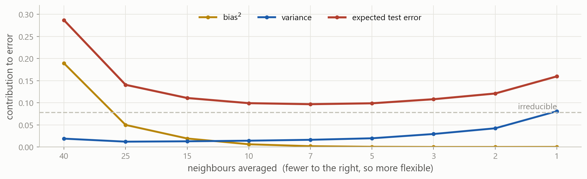
Bias falls, variance rises, and their sum has a minimum somewhere in between. The red curve is the same U as before, now explained.
The dial here is the number of neighbours rather than a polynomial degree, since it separates the two pieces more cleanly. Flexibility is the general idea; the particular knob does not matter.
Get more data variance falls as n grows, and nothing else is as reliable
Use fewer features every extra column is another way to fit noise
Simplify the model a linear model is hard to overfit, which is why it is still the benchmark
Penalise complexity ridge and lasso deliberately add bias to remove more variance
Cross-validate reuse the training data to estimate test error, without touching the test set
Hold something back and do not look at it until you have finished deciding
The last three are the subject of the next block. You now know what problem they are solving.
There is no model that is best for every problem. Whether flexibility helps depends on the shape of the true f and on how much noise sits on top of it, and you do not get to see either one.
So the job is not to find the best model. It is to make the trade-off deliberately, and to be honest about how you measured it.
One table Rows are observations, columns are features, one column is the target.
Y = f(X) + \varepsilon You estimate f. You never remove \varepsilon.
Supervised or not A target column decides it. Number means regression, label means classification.
Cleaning is the work Missing, extreme, wrong scale, not numeric. In that order, most days.
Nothing from the future Not in a fill, not in a scaler, not in a split.
Pick the metric first MAE, RMSE and R² answer different questions. So do precision and recall.
Training error always falls Which is exactly why it cannot be used to choose a model.
Bias against variance Too simple misses the shape. Too flexible learns the noise.
Everything from here is a different way of building \hat{f}. The questions you ask of it are the ones from today, and they do not change.
Four sessions ago the case asked which of two stocks was riskier. It has grown every session since:
Part 1 two stocks, a first look, arithmetic by hand
Part 2 proper volatility, with loops and a function
Part 3 all eleven stocks, pandas, and figures
Part 4 the same data, reframed as a prediction problem
You will take the table you built in Part 3 and turn it into a learning problem:
You still do not fit anything. Part 4 finishes the setup, so that the first model you ever fit is one you already know how to judge.
Stuck? Ask a friend, ask an AI for a hint rather than an answer, or email me at jobo@econ.au.dk.